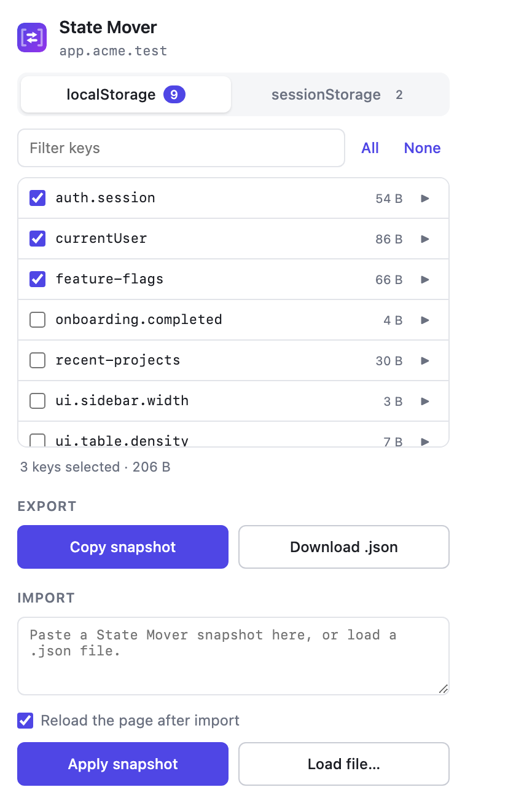

Guide
Everything State Mover does, in the order you will meet it.
1. Install it
State Mover is not on the extension stores yet, so you build it from source. There is no toolchain, no dependencies and no bundler.
git clone https://github.com/animeshsinghweb/StateMover.git
cd StateMover
./scripts/build.shThat writes two ready-to-load folders into dist/:
dist/chromium/for Chrome, Edge, Brave, Opera and Vivaldidist/firefox/for Firefox 142 and later
Load unpacked takes a folder. The zips sitting next to those folders are for uploading to the stores, and no browser will accept one here. If the file picker greys them out, that is the reason.
| Browser | Steps |
|---|---|
| Chrome, Brave, Vivaldi | chrome://extensions → Developer mode on → Load unpacked → dist/chromium |
| Edge | edge://extensions → Developer mode on → Load unpacked → dist/chromium |
| Opera | opera://extensions → Developer mode on → Load unpacked → dist/chromium |
| Firefox 142+ | about:debugging#/runtime/this-firefox → Load Temporary Add-on → dist/firefox/manifest.json |
Firefox's picker is a file picker rather than a folder picker, which is why you point it at the manifest inside the folder. Firefox also drops temporary add-ons when you close the browser; Chromium browsers keep an unpacked extension until you remove it.
Chromium browsers can also load the repository root directly, since manifest.json sits at the top level. Firefox cannot, because it needs manifest.firefox.json renamed into place, which is what the build step does.
2. First run
Open a normal http or https page and click the State Mover icon. The popup shows the page's origin under the title, so you always know which site you are about to read or write.
You will see two tabs, localStorage and sessionStorage, each with a count of how many keys the page has. On a fresh install nothing is ticked.

3. Picking keys
Tick the keys you want. The list is sorted alphabetically and shows each value's size in bytes, so a heavyweight key is obvious at a glance.
- Filter narrows the list as you type. Handy on pages with a hundred keys, which is more common than you would think.
- All ticks everything currently visible. With a filter active it ticks only the matches, so
auththen All grabs every auth key and nothing else. - None clears the current tab's selection.
The running total under the list tells you how many keys are selected across both tabs and how large the snapshot will be.
Your selection is saved automatically, per origin. Tick three keys on app.staging.example.com and they will still be ticked next time you open the popup there, without affecting what you picked on production.
4. Previewing a value
Click the ▶ at the right of any row to expand it. The value appears underneath, pretty-printed if it parses as JSON and shown verbatim otherwise.
Values are fetched only at that moment. Opening the popup reads key names and sizes and nothing else, which keeps things quick on pages holding megabytes of state.
5. Exporting
With at least one key ticked, both export buttons light up.
- Copy snapshot puts the JSON on your clipboard and tells you how large it was.
- Download .json saves it as
state-mover-<host>-<timestamp>.json, which is useful when you want to keep a known-good state around rather than paste it straight away.
6. Importing
Switch to the target tab and open the popup there. Paste the snapshot into the import box, or use Load file... to pick a downloaded .json.
Apply snapshot writes the values. With Reload the page after import ticked, which it is by default, the tab refreshes so the app picks up the new state immediately. Untick it if you would rather reload yourself, or if you want to import into several storages before refreshing.
Import writes whatever the snapshot contains. It does not clear anything first, so existing keys not present in the snapshot are left alone, and keys that are present get overwritten.
7. The snapshot format
A snapshot is plain JSON, readable and editable by hand:
{
"__localStorageTransfer__": true,
"version": 2,
"origin": "https://app.example.com",
"exportedAt": "2026-08-25T10:15:00.000Z",
"local": { "currentUser": "{\"id\":42}" },
"session": { "tempState": "{\"step\":3}" }
}Values are strings, because that is exactly how the browser stores them. A JSON object living in localStorage arrives as an escaped string, which is correct and what the app on the other side expects to parse.
The origin and exportedAt fields are informational. Nothing stops you applying a snapshot to a different origin, which is the entire point.
Snapshots written by version 1.1, which put localStorage values in a flat data field, still import correctly.
8. When something does not work
"State Mover can only read http and https pages"
You are on a page no extension may touch: chrome://, edge://, about:, an add-on store, or a local file. This is a browser rule, not a State Mover limitation. Open a regular site.
The key list is empty
The page genuinely has no keys in that storage, or it was still loading when you opened the popup. Close and reopen the popup to re-read.
"Storage quota exceeded"
The target origin is at its storage limit, usually around 5 MB per origin. Clear some keys on the target and apply again.
The app still shows the old state after import
Reload the page. If you unticked the reload option, nothing has told the app that storage changed. Some apps also cache state in memory at startup, in which case a hard reload helps.
Nothing happens on a page you control
A few sites block storage access from injected scripts through their content security policy or a sandboxed context. State Mover reports what it can, but it cannot get around a page that refuses to hand over its storage.
9. A word on tokens
Session tokens are the most useful thing to move and the most sensitive. A snapshot containing one is, for practical purposes, a copy of that session.
- Treat a downloaded snapshot the way you would treat a password. Do not commit one to a repository or paste it into a shared channel.
- Applying a production token to a local build gives that build production access. That is often exactly what you want, and occasionally exactly what you do not.
- Clear the import box when you are done if you are screen sharing.
State Mover never transmits any of this. Where a snapshot goes after it reaches your clipboard is entirely up to you.